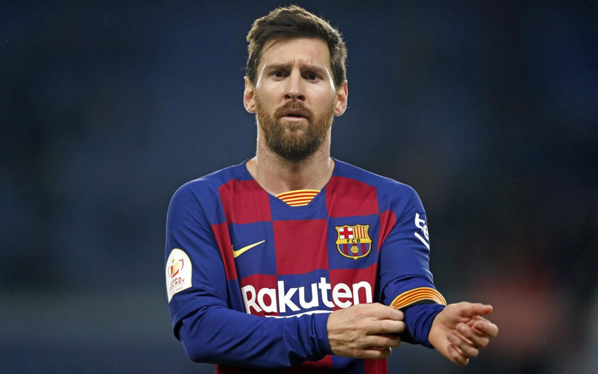

Futbol Club Barcelona, também conhecido como Barcelona e popularmente como Barça, é um clube de futebol profissional, com sede em Barcelona, na Catalunha. Para a temporada 2021–22, a equipe disputa a La Liga, na Espanha. Fundado em 1899 por um grupo de futebolistas suíços, ingleses e catalães.
História
Para compreender a importância do status do Barcelona FC é importante entender a sua história:
Em 1899, Joan Gamper, um suíço, decidiu introduzir o futebol em Barcelona, montando um time. O clube foi oficialmente fundado no dia 29 de novembro de 1899.
Cresceu cada vez mais, ganhando títulos como a Copa Macaya em 1902, a Copa Pirineus em 1910 - 1912.
O Barcelona FC construiu seu primeiro estádio em 1909, com capacidade para 6.000 pessoas.
Durante a década de 1920, a fama e o sucesso do time aumentou. Eles ganharam o primeiro Campeonato da Liga na temporada de 1928 - 1929. Com a nova popularidade do clube, foi necessário construir um novo estádio. Em 1922, o estádio ‘Les Corts’ foi construído, com capacidade para 22.000 pessoas.
É importante lembrar que o Barcelona FC sobreviveu à Guerra Civil. Em 1936, as tropas de Franco atiraram no presidente do clube, Josep Sunyol, devido à sua filiação a um partido de esquerda.
Todos os fãs do Barcelona FC se orgulham do que é chamado de Temporada de ‘Cinco Copas’. Este foi o período entre 1951 - 1952, quando o Barcelona FC venceu a Copa, a Liga, a Copa América, o Martini Rosso e o Eva Duarte.
Em 1957, o Camp Nou foi construído, com capacidade inicial para 90.000 pessoas.
>O sucesso do Barcelona aumentou cada vez mais. Em 1983, o time foi capaz de arcar com jogadores como Bernd Schuster e Diego Maradona.
Em 1988 - 1989, a chegada do lendário Johan Cruyff, como técnico, provocou muitas mudanças no time. O Barça estava forte nesta época, ganhando muitas competições. Os fãs do Barça começaram a entoar "agora temos um novo time".
Em 1996 - 97, duas novas chegadas ao time tiveram um efeito estimulante: Bobby Robson, no banco, e Ronaldo, no gramado. Este foi um ano bem sucedido para o time.
Em 2003, uma nova leva de jogadores se juntou ao time. Isso incluiu Rijkaard e Ronaldinho, Puyol e Xavi.
Em 2004 - 2005, jogadores como Deco e Eto'o se juntaram ao time.
Na temporada de 2004 - 2005, o Barcelona FC ganhou a Liga. Isso aconteceu novamente em 2005 - 2006, quando o clube ganhou a Liga novamente e a Copa Europeia em Paris.
Uma coisa que torna o Barcelona FC verdadeiramente único é seu status de ‘Clube de Futebol’. É um dos poucos times restantes que não é uma sociedade limitada. Isto significa que o clube é ainda de propriedade de seus membros: há 144 mil deles. Esses membros também escolhem o Presidente do time através de um complexo sistema de votação.
Os objetivos do Barcelona FC são fortemente refletidos na recusa deles em aceitar uma empresa patrocinadora na camisa. Em 7 de setembro de 2006, o time anunciou sua nova aliança com a UNICEF para auxílio às crianças. Eles prometeram um valor anual em doações ao departamento de projetos voltados à HIV/AIDS. Eles também usam o espaço da frente da camisa, normalmente reservados para as grandes corporações, para anunciar a UNICEF e, assim, a sua causa. O time continuará a usar o logotipo da UNICEF na camisa.
É claro que o Barcelona FC está no direito de alegar que a instituição que eles criaram é "mais do que um clube".
Se você visitar o Barcelona, você pode querer fazer o famoso passeio ao estádio e museu do Barcelona FC, que é o mais popular em Barcelona.
GALERIA
